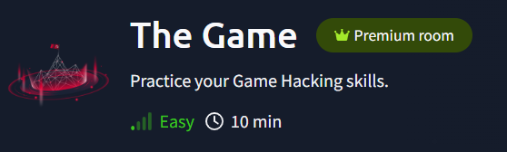
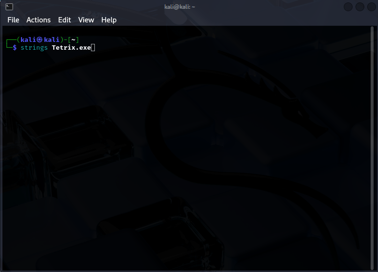
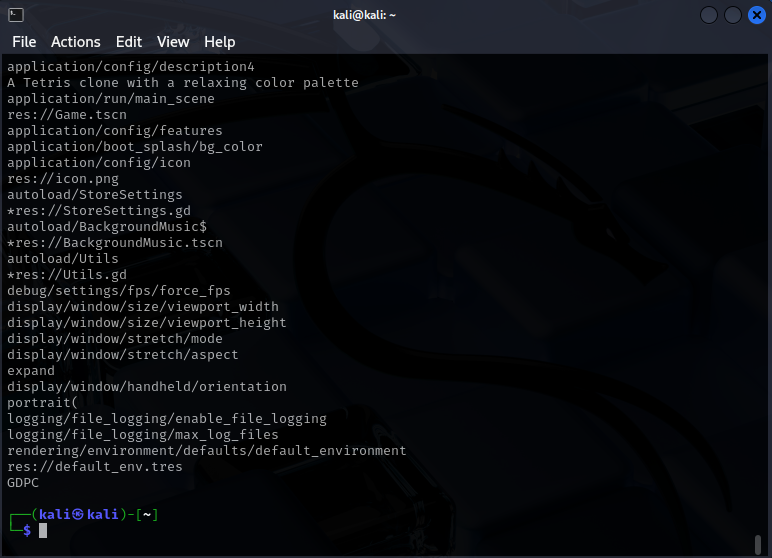
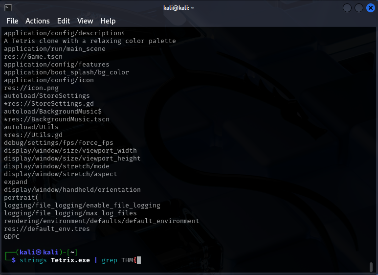
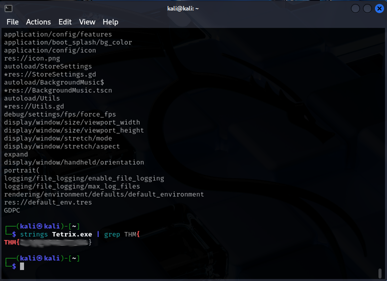

You can find this room here.

The room is rated as "Easy", so it shouldn't require too much effort. There is a file to download, which includes a .exe file. Although it was compiled for Windows, I want to analyze it using the strings command on my Kali system.

Here is the result:

There are many strings in the file, but I know that the one I'm looking for starts with THM{. So, I can filter the result using grep:

And I get the flag!

This room was indeed easy, and the flag can be captured in just a few minutes.